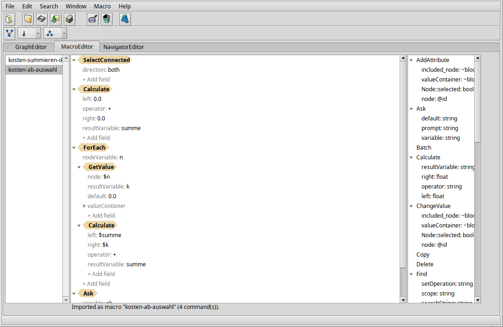
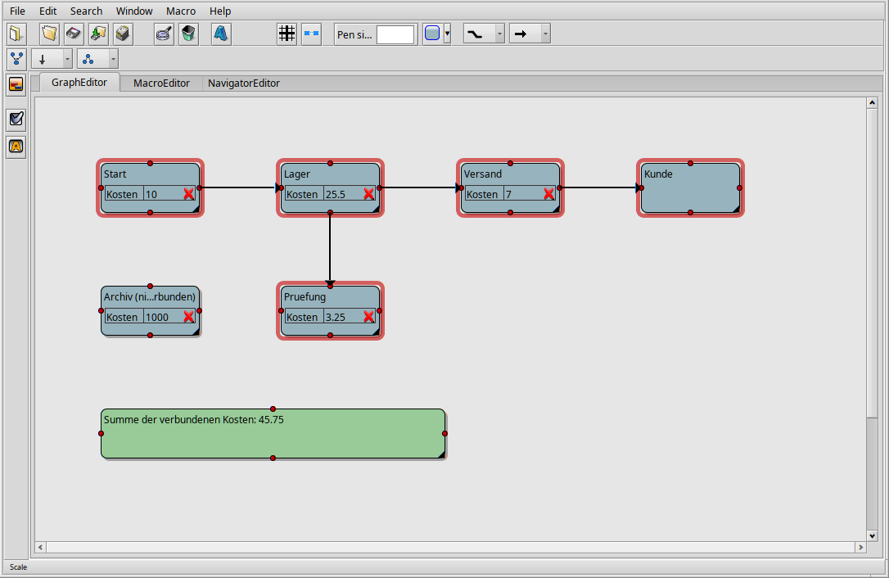

A macro is a list of commands - insert nodes, select, move, change an attribute, lay out the graph, ... - that ProjectConceptor plays back on the current document. Macros can be recorded while you work, built and edited in the MacroEditor tab, and use loops, conditions and variables. They are saved with the document and can be exported to a text file.

Record one: choose Macro > Start recording, do your edits in the graph, choose Macro > Stop recording and give the macro a name. It now appears under Macro > Play.
Build one: choose Macro > New, switch to the MacroEditor tab and drag commands from the list on the right into the tree in the middle. Click a value to change it. Play it with Macro > Play.
| Item | What it does |
|---|---|
| Start recording / Stop recording | Records every edit in between as a new macro; you're asked for a name when you stop. |
| Play | Lists this document's macros - choose one to play it. |
| New | Creates an empty macro to build in the MacroEditor tab. |
| Open | Imports a macro from a text file (see Macro files). A macro with the same name is replaced. |
| Save | Exports the macro selected in the MacroEditor tab to a text file. |
| Rename / Duplicate / Delete | Act on the macro selected in the MacroEditor tab. Delete asks first and can't be undone. |
Macros belong to the document: they are saved with it and are there again when you open it.
The tab has three parts: the document's macros on the left, the selected macro as a tree in the middle, and a reference of all commands with their fields on the right. Hover a command in the reference to see what it does.
In the tree, each command is a tan, arrow-shaped label; its fields are
the lines below it (name: value). Commands that contain other
commands - Repeat, ForEach, If and Batch - show those
indented below their own fields. Nodes and connections that a command
creates appear as blue, rounded chips; expand one to see and edit the
node's data. Plain nested data (such as valueContainer) appears in
grey italics.
Changing a value: click the value. A text field opens right on it; press Enter to keep the change or Esc to discard it. Text needs no quotes. A true/false value toggles with a single click. If what you typed doesn't fit the field (letters in a number field, say), the status line says so and the old value stays.
Adding a field: click + Add field below a command; the menu
lists that command's fields. Fields that can repeat (like Select's
node) stay in the menu after you've added them once. Inside nested
data you can add a field of any type under a name of your choice.
Adding a command: drag it from the reference on the right into the tree. Drop it on the upper or lower half of a row to place it before or after that command; drop it on a Repeat, ForEach, If or Batch to add it as that command's last step.
Moving commands: drag a command - or several selected ones - to its new place, with the same drop rules. Right-click a row for Move Up and Move Down.
Deleting: select one or more rows (Shift/Ctrl for several) and press Delete, or right-click and choose Delete.
Pointing a command at a node: commands such as Select, Group or
ChangeValue take a node field. A node created by an earlier Insert
in the same macro is written @1, @2, ... - the number in that
Insert's own node field. Instead of typing it, drag the node's chip
onto the command's row (adds a node field) or onto an existing node
field (replaces it).
Expand All / Collapse All: right-click any row, or an empty spot in the tree.
While recording, every command you carry out is added to the new macro, in order. Edits you make to the node you just selected - renaming it inline, changing an attribute, its color - are recorded as "the selected node(s)" rather than "this exact node", so the macro also works on other nodes and in other documents. Inserting new nodes records the complete node, so playing the macro creates it again.
Typing into the search field is not recorded keystroke by keystroke.
Choose the macro under Macro > Play, or press its shortcut (see below). The graph updates after each step. When the macro has finished, the status line in the MacroEditor tab reports the result, for example "Played 6 command(s).".
If something didn't work, an alert says what - the first problem and how many there were (see When something goes wrong). A macro never quietly continues with a made-up value.
Each top-level command of the macro is one step in Edit > Undo. A Repeat, ForEach, If or Batch is undone as a whole.
Variables carry values from one command to a later one while a macro plays. They exist only during that one playback.
These commands put a value into a variable:
| Command | Variable | Value |
|---|---|---|
| Repeat | counterVariable |
the pass number, starting at 0 |
| ForEach | nodeVariable |
the node of the current pass |
| Insert | resultVariable |
the node(s) just inserted |
| Remember | variable |
the current selection |
| Calculate | resultVariable |
the result of the calculation |
| GetValue | resultVariable |
an attribute of a node |
| Ask | variable |
the text you typed into a dialog |
There are two ways to use a variable:
A whole field: $name. Write $ and the variable's name as the
field's value - dx=$offset, node=$cell. The field gets the
variable's value when the command runs. This works for any field of a
command itself, not inside nested data like valueContainer.
Inside text: ${name}. In any text value - a node's name, an
attribute's value, an Ask prompt, nested data included - ${name} is
replaced by the variable's value: "Row ${row}, column ${col}". Whole
numbers appear without decimals (3, not 3.000000). Write $${ for
a literal ${.
Numbers and text: text in a number field is converted - 12.5 and
12,5 both work. Text that isn't a number is an error, not 0. 1.000,5
(dot and comma together) is an error too, because it's ambiguous.
Loop counters start at 0. For a count starting at 1, add a step before:
Calculate
left=$i
operator="+"
right=1.0
resultVariable="number"
count times.searchString finds
something - the same search as Find, but it doesn't change the
selection.milliseconds - useful to watch a long macro.These can be nested: a Repeat inside a Repeat walks rows and columns.
SelectConnected works like a loop over the graph: it adds every
node reachable from the selection over connections, following
direction (both, outgoing or incoming) for depth steps (0
means until nothing new is found). Combined with ForEach and GetValue
it can, for example, add up an attribute over everything connected to
a node.
Fields marked optional can be left out.
| Command | Fields | What it does |
|---|---|---|
| AddAttribute | node or Node::selected=true; valueContainer (name, subgroup, type, newAttribute) |
Adds an attribute to the node(s). |
| Ask | variable; optional prompt, default |
Shows a dialog and stores the answer as text. |
| Batch | - | Runs its steps as one undo step. |
| Calculate | left, operator, right, resultVariable |
+ - * / mod min max combine left and right; round floor ceil abs use only left. |
| ChangeValue | node or Node::selected=true; valueContainer (name, subgroup, type, newValue) |
Changes one field of the node(s). |
| Find | searchString; optional scope (nodes, connections, both), setOperation (replace, add, subtract, intersect) |
Selects what contains the text, combined with the current selection as set by setOperation. |
| ForEach | optional nodeVariable |
Runs its steps once per selected node. |
| GetValue | node, valueContainer (name, subgroup), resultVariable; optional default |
Reads an attribute of the node into a variable. Missing attribute: default if given, otherwise an error. |
| Group | node; optional deselect |
Groups the selection under the given group node. |
| If | searchString; optional scope |
Runs its steps only if the search finds something. |
| Insert | node (with the node's data); optional resultVariable |
Inserts nodes and connections. |
| Layout | optional direction (TB, LR, ...), engine (dot, neato, fdp, sfdp, circo, twopi) |
Automatic layout of the whole graph. |
| Move | dx, dy |
Moves the selection. |
| Remember | variable |
Stores the selection; restore it with Select and node=$variable. |
| RemoveAttribute | node or Node::selected=true; valueContainer (name, subgroup, index) |
Removes an attribute from the node(s). |
| Repeat | count; optional counterVariable |
Runs its steps count times. |
| Select | one of node, frame, selectAll=true; optional deselect |
Selects nodes. Clears the previous selection first, unless deselect=false. |
| SelectConnected | optional direction, depth |
Adds everything connected to the selection. |
| Sleep | milliseconds |
Pauses playback. |
Copy, Delete, Paste and Resize can be recorded and played, but their fields can't be edited in the tree or in a macro file.
Attributes you add with the toolbar live in the node's Node::Data.
To read or change one, use name = the attribute's name and
subgroup="Node::Data".
Three nodes in a row, named with a counter:
Repeat
count=3
counterVariable="i"
Insert
resultVariable="n"
node=@1
~included_node
this=1
what=class
Node::Frame=[100.0,100.0,200.0,160.0]
~Node::Data
Node::name="Node ${i}"
Calculate
left=$i
operator="*"
right=130.0
resultVariable="x"
Select
node=$n
Move
dx=$x
dy=0.0
Every pass inserts a fresh copy of the node at the same spot, so the
Move pushes pass number i by i x 130 pixels to the right.
A node written by hand like this needs only a name and a frame; it gets the default font and colors. Recorded and dragged-in Inserts bring their complete look.
Add up "Costs" over everything connected to the selected node - select a node first:
SelectConnected
direction="both"
Calculate
left=0.0
operator="+"
right=0.0
resultVariable="sum"
ForEach
nodeVariable="n"
GetValue
node=$n
~valueContainer
name="Costs"
subgroup="Node::Data"
resultVariable="c"
default=0.0
Calculate
left=$sum
operator="+"
right=$c
resultVariable="sum"
Ask
variable="ok"
prompt="Sum:"
default="${sum}"

Ready-to-import versions of these and larger examples are in
docs/fixtures/, for instance kosten-summieren-demo.txt and
rekursives-platzhalter-makro.txt.
Macro > Save writes the selected macro as text, Macro > Open reads one back; the file name becomes the macro's name. The format is the one in the examples above:
name=value sets a field. Values: "text" (with \" and \\),
true/false, 12 (whole number), 1.5 (decimal), (x,y) (point),
[left,top,right,bottom] (rectangle), @1 (a node of this macro),
$name (a variable).~name starts nested data; its fields follow one level deeper.
Inside it, what=class, what=group or what=connection says what
kind of object it is.# are comments.raw:... values preserve data that has no readable form; they're not
meant to be written by hand.Command and field names are checked when the file is read. An unknown name, a value of the wrong kind or a wrong indentation is reported with its line number, and nothing is imported.
In Edit > Project settings, tab Shortcuts, the Macro shortcuts list assigns a key combination to a macro name: click New..., pick one of the current document's macros and press the keys. Double-click an entry to change its keys. The shortcut plays the macro of that name in whichever document you're working in, from then on in all open windows.
The alert after playback names the first problem. The most common ones:
| Message | Meaning |
|---|---|
| Command N (Name) failed. | That command couldn't run; playback stopped there. |
| N node reference(s) point to nodes the macro never creates | A node=@id refers to a node no Insert in this macro creates. |
| "$name" (for "field"): no such variable | The variable was never set - a typo, or it's set later in the macro. |
| "${name}": no such variable | The same for a placeholder in text. The text is left as written. |
| ... is "...", not a number | Text in a number field that isn't a number. |
| GetValue: node "..." has no attribute "..." | Add default=0.0 if nodes without the attribute should count as 0. |
| The macro is empty - nothing to play. |
@id refers to the node as it was
defined, not to the copy a pass inserts. Use resultVariable to work
with a pass's own nodes.${n} for a ForEach node is an
error); read one of its attributes with GetValue instead.